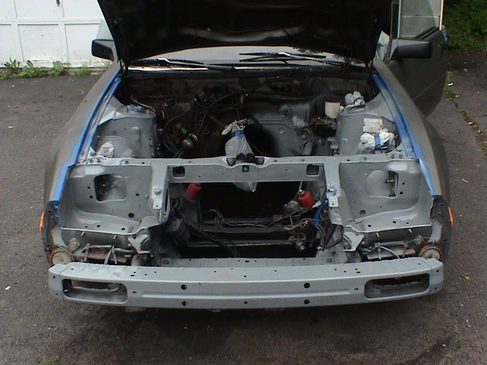

-
Just curious to see if anyone has tucked the wiring harness in their engine bay to give it a cleaner look?My Project '88 Z31 To Do List:
S13 rear subframe,
'91 Q45 R200 diff,
'91 Infiniti VH45DE,
Z33 6-speed transmission
Custom wire harness
-
If there is anybody here that might do it, i'm sure it would be 1artworkz.
I cleaned mine up and rerouted some of the harness for a cleaner look, but
its still visible. The crappy way they did the injector campaign wiring really
inspired me to redo mine, well, that and the legacy of having an ex-military
electronics teacher that thought proper wire routing was more important
than the components they connected. Entirely "shaving" an engine with EFI would
be a PITA.
84 AE/Shiro #683/Shiro #820/84 Turbo -
Shaved? You have access to all of the words on the innernets and you choose shave?
I'm sad.
-
Old school Hot Rod Guys say "sanitized" or "Cleaned Up"
1988 300ZX Turbo, Shiro Special #760
1988 300ZX Turbo Automatic (wife's car)
1991 Hard-body 2WD
http://zccw.org/zccw/?page_id=1215 -
It's on my list. I still have yet to work out the details.Z_Karma wrote: If there is anybody here that might do it, I'm sure it would be 1artworkz. … snip … -
[quote]1artworkz wrote:I always thought mil connectors might be nice, have female ports on the firewall or wherever and plug the harness into the chassis… would also eliminate many ugly grommetsOriginally posted by Z_Karma -
Now, that is a very good idea.G-E wrote: I always thought mil connectors might be nice, … snip …
-
I chose 'shaved' because I did a search prior to posting this and that was the word I found that was being used. Feel free to replace it with 'sanitized', 'cleaned up' etc.
Those military connectors look like a sturdy option. Thanks for the input so far.My Project '88 Z31 To Do List:
S13 rear subframe,
'91 Q45 R200 diff,
'91 Infiniti VH45DE,
Z33 6-speed transmission
Custom wire harness
-
[quote]1artworkz wrote:we called those things "cannon plugs" don`t ask me why, i was an airframer....Originally posted by G-E
Exercising my constitutional right to be awesome
good thing....1.5.2. Podium winning cars do NOT need to be running at the checkered flag -
Still got this in mind, but I am now considering building a harness from scratch so I can accommodate some of the mods I'd like.My Project '88 Z31 To Do List:
S13 rear subframe,
'91 Q45 R200 diff,
'91 Infiniti VH45DE,
Z33 6-speed transmission
Custom wire harness
-
Don't bother. Thats more work and headache than you think it is.
Just use the stock harness and shorten or extend it so you can route it where you want to. You will realize how silly making a brand new harness is once you get to it. -
I've been working on plans for building a new harness for a while. It may be a large task but given the things that can be done with it, I consider it a worthwhile project (and in most cases a better solution than adding 25+ solder joints to extend old/hard wiring). Those mil connectors are sick and I would love to use them myself for the firewall connection… but I don't know anyone who has the crimpers needed and I don't plan on spending $150+ on connector crimpers.
as jn1cz said, there are a few wires that run through ugly places regardless of a fender tuck or not… the only way to combat this sometimes is to move the location of the wire destination… like the relay box, etc.1985 NA2T(now RB) * 1988 SS x2 * 1984 AE x3 * 2006 350Z

-
Until you've been in the vw scene, you don't even know the meaning of a shaved bay.
Some SC vr6 action


1988 300zxt. gt35, stance, etc. Wheels: Varrstoen ES2 18x9.5 et-13 225/40. 18x10.5 et0 245/40
1990 jetta vr6'd -
Whatever, I shaved my engine
 -
The Wire Tuck thread.
viewtopic.php?f=4&t=15303
Those VW's are sick. They look so good. How did they pull that off?Originally posted by AZ-ZBum

Copyright © 2006–. All rights reserved. Privacy Policy